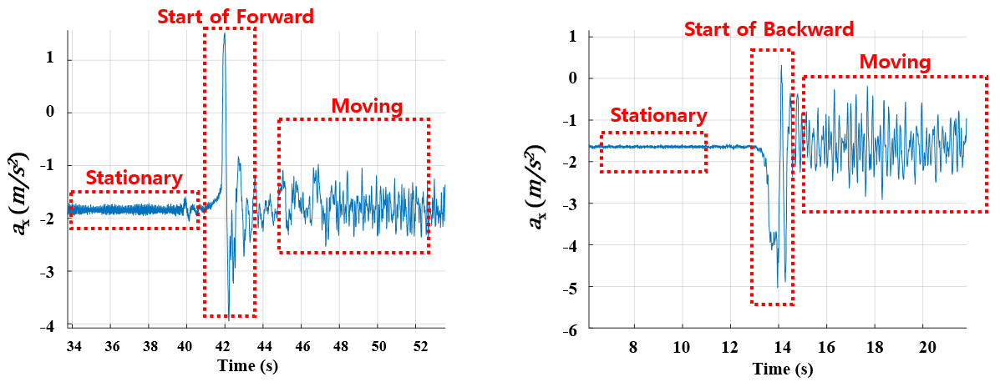
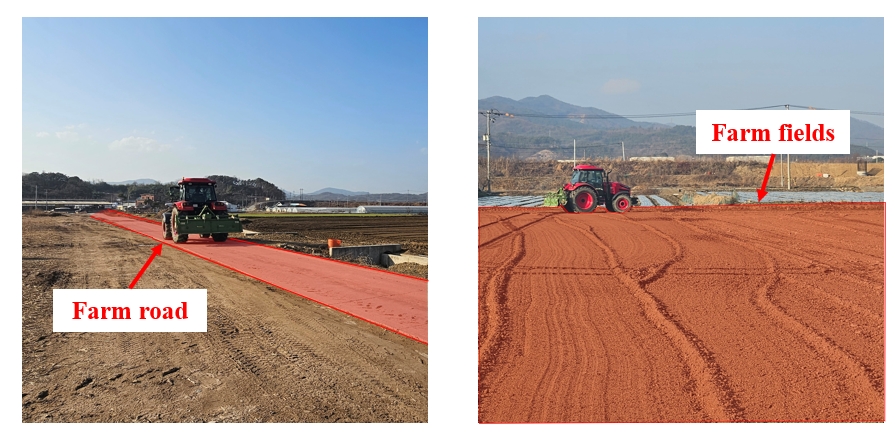
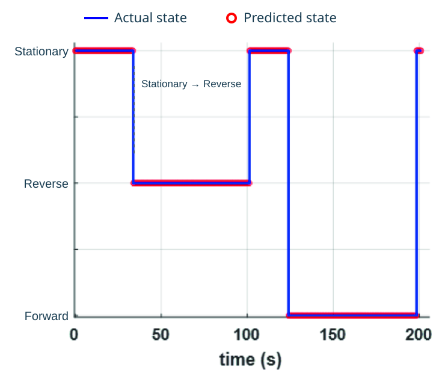

Classify the state from an external IMU alone, without gear, brake or CAN data
MINISTRY OF SCIENCE AND ICT R&D, OFF-ROAD NAVIGATION
IMU-based driving-state classification with LSTM and FSM
On a semi-autonomous tractor that does not use gear, brake or vehicle CAN signals directly, I classified forward, reverse and stationary states from IMU time series alone. An LSTM detects state-transition patterns, and an FSM keeps a brief misclassification from needlessly switching the output state.
- Input
- IMU 3-axis acceleration and 3-axis angular rate
- My work
- LSTM training, FSM design, real-time ROS integration, field testing
- Field testing
- Semi-autonomous tractor, three test routes
- Results
- Average F1-score 99.50%; co-author, Measurement (2026)
01 / CONSTRAINT
Why the state was needed
To align the initial heading and apply corrections while stopped, the navigation system needed to know whether the vehicle was moving forward, reversing or stationary. On this platform, gear, brake and vehicle CAN signals could not be used directly, and vibration and wheel slip in farm fields made simple thresholds unreliable. The goal was to classify the three states with the existing IMU and no extra sensors.
Use the existing inertial data without changing the system or adding sensors
Surface conditions disturb the signals and threshold-based decisions
A single sample from steady driving cannot tell the direction of travel
02 / OBSERVATION
The clue was in the transitions

- Constant speedAcceleration and angular-rate waveforms overlap, leaving no basis for direction
- Start of motionThe x-axis acceleration sign differs between starting forward and starting in reverse
- ReframingFrom classifying the current waveform to recognizing state-transition sequences
03 / DESIGN
Combining an LSTM with an FSM

Forward and reverse were hard to separate from steady-speed waveforms. The LSTM finds the temporal pattern at the start of motion, and the FSM carries that event forward as a persistent state.
Without the FSM, the SVM and RF baselines reached a reverse F1-score of only about 10–37%; with the FSM, they improved to over 98%. This showed that the decision needs the previous state and transition conditions, not just the instantaneous classification.
04 / FIELD TEST
Field experiments

GPS was used to validate the position of the full navigation system. The driving-state classifier used only the IMU as input.
05 / CLASSIFICATION
Classification results
99.50%
Average F1-score across three field routes
LSTM-FSM classification tested on real routes that repeatedly switch between forward, reverse and stationary


06 / OWNERSHIP
My contribution
Within the full navigation system, I was responsible for the driving-state classification algorithm.
- DataIMU preprocessing, sequence construction and driving-state labeling
- ModelLSTM design and training; analysis of baseline classifiers
- Decision logicFSM transition rules that combine LSTM predictions with the previous state
- IntegrationReal-time ROS data pipeline and driving-state output
- ValidationField tests on farm roads and fields; analysis of results and misclassified segments
07 / OUTPUT
Related publications
Measurement 278
(2026) 121679A novel navigation system using driving state classification algorithm for semi-autonomous tractorsCo-author 4 of 6 / PDF (English)ICROS 2024Implementation and Testing of a ROS-Based Navigation System for Autonomous Agricultural MachineryTitle translated from Korean.Co-author 2 of 5 / PDF (Korean)
(2026) 121679A novel navigation system using driving state classification algorithm for semi-autonomous tractorsCo-author 4 of 6 / PDF (English)ICROS 2024Implementation and Testing of a ROS-Based Navigation System for Autonomous Agricultural MachineryTitle translated from Korean.Co-author 2 of 5 / PDF (Korean)